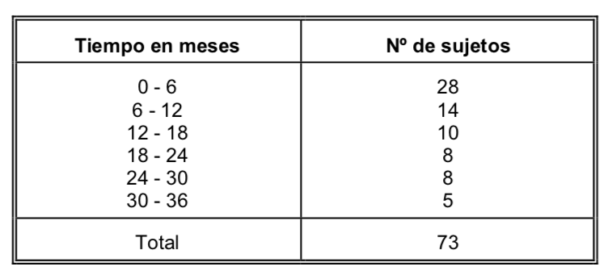

Capitulo 2 Planteamiento de una investigación: Anatomía y Fisiología de la investigación
En este capítulo se resolverán problemas relativos a:
- Diseño de una investigación
- Métodos de muestreo
- Métodos de recolección de datos
- Variables y Escalas de Medida
- Errores en la Investigación
2.1 Pregunta test
En una muestra de pacientes, el número de varones dividido entre el total de pacientes es:
- Una frecuencia relativa.
- Una frecuencia absoluta.
- Una variable cuantitativa.
- Una variable cualitativa.
- Un valor de la variable.
2.1.1 Solución
2.2 Pregunta test
Señale cuál de las siguientes afirmaciones es falsa:
- La aparición o no de bacterias en un cultivo es una variable dicotómica
- La estatura de un individuo es una variable cuantitativa discreta.
- El lugar que ocupa una persona entre sus hermanos (de menor a mayor edad) es una variable ordinal.
- El estado civil es una variable cualitativa.
- La glucemia es continua.
2.2.1 Solución
2.3 Problema
En base a la siguiente distribución de frecuencias relativas acumuladas de la variable \(X\) =“Número de contratos conseguidos en el mes de enero” obtenida de la observación de la actividad de 50 teleoperadores de una compañía de telefonía móvil, indique el número mínimo de contratos que tiene que haber conseguido un teleoperador para estar entre los 5 que han destacado más:
| \(X_i\) | 58 | 60 | 62 | 65 | 68 | 70 | 71 |
|---|---|---|---|---|---|---|---|
| \(H_i\) | 0.06 | 0.2 | 0.4 | 0.64 | 0.8 | 0.92 | 1 |
2.3.1 Solución
Al haber 50 teleoperadores, si tiene que estar entre los 5 que han destacado mas, debe dejar a 45 por detrás. Como \(\frac{45}{50}=0.9\), deberá superar al 90 %, es decir, estar por encima del 0.9 en la frecuencia relativa acumulada.
En la tabla vemos que para el valor 70 se alcanza la frecuencia relativa acumulada de 0.92 por lo que para estar entre los 5 que más han destacado, deberá haber firmado, al menos, 70 contratos.
2.4 Pregunta test
¿A qué fase del proceso de investigación pertenece la recogida, análisis e interpretación de los resultados?
- Fase conceptual.
- Fase Metodológica.
- Fase Empírica.
- Fase de análisis e interpretación de los datos.
2.4.1 Solución
2.5 Pregunta test
En el caso de una variable ordinal, el número n de datos válidos es:
- La suma de las frecuencias absolutas.
- La frecuencia absoluta acumulada de la categoría más frecuente.
- La suma de las frecuencias relativas.
- La frecuencia relativa acumulada en la última categoría.
- La (a) y la (d) son ciertas.
2.5.1 Solución
2.6 Pregunta test
En un estudio sobre problemas cervicales preguntamos a los pacientes acerca del tipo de almohada que usan. Las respuestas deberían ser consideradas como una variable:
- Cualitativa nominal
- Numérica
- Discreta
- Continua.
- Ordinal
2.6.1 Solución
2.7 Problema
De la distribución de la variable \(X\) = ‘Peso (en Kg)’ de un colectivo de adolescentes agrupada en 4 intervalos con límites superiores 60, 65, 70 y 75 se sabe que:
- la mitad del colectivo pesa entre 65 y 70 kg
- una cuarta parte pesa como máximo 65 kg
- 9 adolescentes tiene un peso máximo de 60 kg
- 18 pesan entre 70 y 75 kg.
Calcula
a) El número n de adolescentes entrevistados
b) El porcentaje de adolescentes que pesan entre 55 y 60 kg
c) El peso mínimo de la mitad de adolescentes con mayor peso
d) Cuántos alumnos pesan como máximo, 65 kg
2.7.1 Solución
Vemos que tenemos mucha información que conviene organizar en forma de tabla. Empezamos escribiendo una tabla con los datos que tenemos:
| Intervalo | \(f_i\) | \(h_i\) | \(F_i\) | \(H_i\) |
|---|---|---|---|---|
| \([55,60)\) | 9 | 9 | ||
| \([60,65)\) | 0.25 | |||
| \([65,70)\) | 0.50 | |||
| \([70,75)\) | 18 | 1 |
A partir de estos datos, vamos a completar el resto.
Como el 25 % pesan menos de 65 y el 50 % entre 65 y 70, entonces el 75 % pesarán menos de 70 kg y el 25 % pesarán más de 70 hg.
| Intervalo | \(f_i\) | \(h_i\) | \(F_i\) | \(H_i\) |
|---|---|---|---|---|
| \([55,60)\) | 9 | 9 | ||
| \([60,65)\) | 0.25 | |||
| \([65,70)\) | 0.50 | 0.75 | ||
| \([70,75)\) | 18 | 0.25 | 1 |
Así, el 25 % (la cuarta parte) del número n de adolescentes entrevistados es 18 por lo que \(n = 18 \cdot 4 = 72\). El 50 % de 72 es 36 y, como hay 9 adolescentes entre 55 y 60 kg y como \(72 - 9 - 36 - 18 = 9\), tendremos
| Intervalo | \(f_i\) | \(h_i\) | \(F_i\) | \(H_i\) |
|---|---|---|---|---|
| \([55,60)\) | 9 | 0.125 | 9 | 0.125 |
| \([60,65)\) | 9 | 0.125 | 18 | 0.25 |
| \([65,70)\) | 36 | 0.50 | 54 | 0.75 |
| \([70,75)\) | 18 | 0.25 | 72 | 1 |
Y a la vista de la tabla, podemos responder a las preguntas:
a) Se entrevistaron a 72 adolescentes
b) El 25 % de adolescentes pesa entre 55 y 60 kg
c) El 50 % de los adolescentes con mayor peso están en los intervalos \([65,70)\) y \([70,75)\) y, como no podemos saber exactamente cuál es el peso menor de ese 50 %, el peso mínimo de la mitad de adolescentes con mayor peso es de, al menos, 65 kg.
d) 18 alumnos pesan como máximo 65 kg
2.8 Pregunta test
¿Cuál de las siguientes características pertenece al paradigma naturalista?
- Pretende buscar la objetividad.
- El investigador interactúa con los sujetos investigados y los resultados se crean de esa interacción.
- Utilización de procesos deductivos.
- Importancia en el análisis estadístico.
2.8.1 Solución
2.9 Pregunta test
El estudio estadístico en el que se pretenden extrapolar los datos de una muestra a la población se denomina:
- Estadística descriptiva.
- Estadística inferencial.
- Medidas de tendencia central.
- Medidas de posición.
2.9.1 Solución
2.10 Problema
Con el objetivo de programar las actividades en un consultorio se obtiene información del número de consultas realizadas el año anterior:
| Mujeres | Hombres | |
|---|---|---|
| Intervalo | n | n |
| 1 - 3 | 18 | 22 |
| 4 - 6 | 39 | 31 |
| 7 - 9 | 53 | 46 |
| 8 - 10 | 45 | 40 |
| 11 - 13 | 53 | 35 |
| 14 - 16 | 39 | 29 |
| 17 - 20 | 18 | 26 |
| Total | 265 | 229 |
a) Indique el (o los) nombre(s) de las(s) variables(s) de la tabla e identifique sus categorías.
b) Indique el tipo de escala de las(s) variables (s) de la tabla.
c) ¿Qué porcentaje de pacientes realiza, al menos, 8 consultas?
2.10.1 Solución
a) La variable estudiada es número de consultas realizadas el año anterior con 2 categorías, Mujeres y Hombres.
b) Es una variable cualitativa discreta de escala ordinal con resultados agrupados en intervalos.
c) Para calcular el porcentaje pedido, vemos que:
Mujeres con, al menos 8 consultas: \(45 + 53 + 39 + 18 = 155\)
Hombres con, al menos 8 consultas: \(40 + 35 + 29 + 26 = 130\)
Pacientes con, al menos 8 consultas: \(155 + 130 = 285\)
Total de pacientes: \(265 + 229 = 494\)
Como \(\dfrac{285}{494} \approx 0.577\), entonces el 57.7 % de pacientes realiza, al menos, 8 consultas.
2.11 Pregunta test
Elija la afirmación correcta sobre variables observadas en individuos:
- Poseer vivienda propia es una variable numérica.
- Poseer animales de compañía es una variable cualitativa.
- La nacionalidad es una variable ordinal.
- El tipo de almohada que usa es variable ordinal.
- La longitud de la cama donde duerme es variable discreta.
2.11.1 Solución
2.12 Pregunta test
La estadística en Ciencias de la Salud se utiliza para obtener información sobre situaciones de caracter:
- Determinista.
- Sistemático.
- Exhaustivo.
- Aleatorio.
- Excluyente.
2.12.1 Solución
2.13 Pregunta test
Elija la afirmación que pueda considerarse admisible al leer un estudio estadístico:
- Se estudió a una muestra en vez de a la población, para mayor precisión.
- Se estudió a la población para obtener información sobre la muestra.
- Se estudió a una muestra representativa de la población.
- Se estudiaron todas las variables de la población.
- Se observó a un individuo de cada variable.
2.13.1 Solución
2.14 Problema
En un estudio sobre supervivencia tras un tratamiento con quimioterapia para cierto tipo de cáncer ha sido registrado el tiempo transcurrido desde el inicio del tratamiento hasta el fallecimiento de los individuos. Los tiempos registrados se resumen en la tabla adjunta, agrupados por intervalos de 6 meses de amplitud:

a) Calcule las frecuencias relativas y porcentajes de los distintos intervalos.
b) Calcule los puntos medios de los intervalos.
c) Calcule las frecuencias absolutas y porcentajes acumulados
d) Construya el histograma, polígono de frecuencias y polígono acumulativo
2.15 Pregunta test
Elija la afirmación correcta:
- Los valores de cualquier variable deben ser agrupados en intervalos.
- Las variables deben ofrecer valores que no se repitan en los diferentes individuos.
- Las modalidades de una variable deben poder ser observadas en todos los individuos.
- Los individuos pueden poseer diferentes modalidades de la misma variable.
- Todo lo anterior es falso.
2.15.1 Solución
2.16 Pregunta test
Elija la opción correcta.
- Un parámetro es algo calculado sobre cada individuo.
- Un parámetro es calculado sobre la muestra.
- Una variable se calcula sobre los parámetros de una población.
- Un estadístico se calcula sobre la población.
- Nada de lo anterior es correcto.
2.16.1 Solución
2.17 Pregunta test
Disponemos de la distribución de edades de los individuos de una población. El número de ellos que no es mayor de edad, es:
- Una frecuencia relativa.
- Una frecuencia absoluta.
- Una frecuencia acumulada.
- Una variable numérica.
- Una variable cualitativa.
2.17.1 Solución
2.18 Pregunta test
Conocemos la distribución de estudiantes entre las distintas facultades del campus Viriato. El número de estudiantes de Enfermería es:
- Una frecuencia relativa.
- Una frecuencia absoluta.
- Una frecuencia acumulada.
- Un porcentaje.
- Una variable cualitativa.
2.18.1 Solución
2.19 Pregunta test
Se llama parámetro a:
- Una función de valor numérico definida sobre alguna característica observable en los individuos de una población.
- Una función definida sobre los valores numéricos de una muestra.
- Cualquier variable observable de una población
- Las variables numéricas de la muestra
- Cualquier función sobre las variables observadas
2.19.1 Solución
2.20 Pregunta test
El grado de satisfacción (poco/regular/mucho) con la política española la trataría como:
- una variable cualitativa nominal.
- una variable cuantitativa discreta.
- una variable cualitativa ordinal.
- una variable numérica continua.
- ninguna de las anteriores es correcta.
2.20.1 Solución
2.21 Pregunta test
Con respecto a la modalidades de una variable cualquiera:
- Pueden siempre agruparse en clases.
- Deben formar un sistema exhaustivo.
- No pueden agruparse en intervalos.
- No tienen porqué formar un sistema excluyente.
- Solo dos son correctas.
2.21.1 Solución
2.22 Pregunta test
Cuando hablamos de número de cumpleaños que ha tenido una persona estamos ante:
- Una variable cualitativa ordinal.
- Una variable cualitativa nominal.
- Una variable cuantitativa discreta.
- Una variable cuantitativa continua.
- El número de cumpleaños no es una variable.
2.22.1 Solución
2.23 Pregunta test
Las frecuencias acumuladas tienen sentido para:
- Variables ordinales
- Variables numéricas
- Variables nominales
- Todas son correctas.
- Las opciones a) y b) son correctas.
2.23.1 Solución
2.24 Pregunta test
Disponemos de la distribución de edades de los individuos de una población. El número de ellos que tiene dos o menos hijos es:
- Una variable cualitativa.
- Una variable numérica.
- Una frecuencia acumulada.
- Son correctas a) y b)
- Ninguna es correcta.
2.24.1 Solución
2.25 Pregunta test
Los principales objetivos de la estadística descriptiva son:
- Sintetizar la información contenida en los datos.
- Aportar resúmenes significativos de las distribuciones.
- Contribuye a la realización de los posteriores análisis estadísticos.
- Todos son correctos.
2.25.1 Solución
2.26 Pregunta test
El tipo de variable cualitativa que sus valores o categorías no pueden ser ordenados, se denomina:
- Variable ordinal.
- Variable discreta.
- Variable nominal.
- Variable continua.
2.26.1 Solución
2.27 Pregunta test
¿A qué fase del proceso de investigación pertenece la relación de los objetivos e hipótesis de la investigación?
- Fase conceptual.
- Fase Metodológica.
- Fase Empírica.
- Fase de análisis e interpretación de los datos.